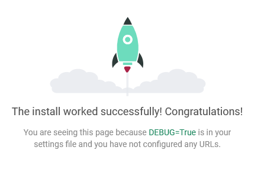
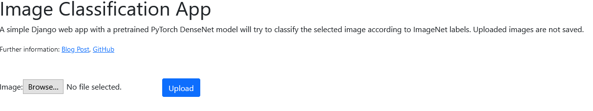
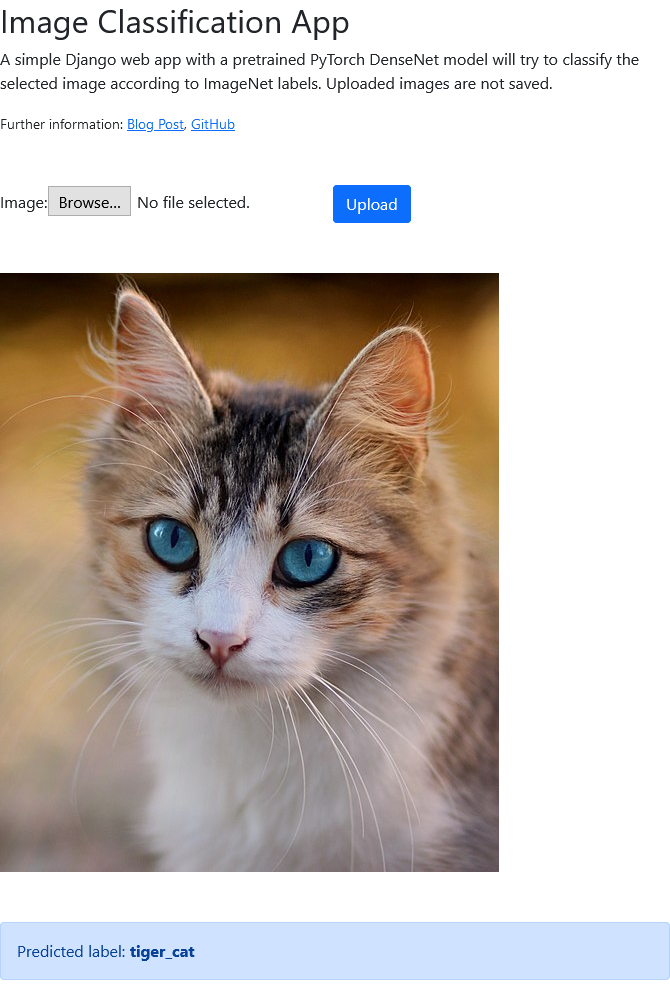

In this blog post, I build a simple image classification app using a pre-trained DenseNet 121 model in PyTorch. I deploy this image classification model inside a Django web app on Heroku.

This is very much related to the PyTorch guide on deployment with Flask. Here, I show an alternative using Django, which is not as light-weight but contains more features built-in than Flask. For more information on differences between Django and Flask, see this website.
- Deployed image classification app on Heroku
- GitHub repository with final code
- Related blog posts:
Note that my deployed app may take several seconds to load because I use Heroku’s fee dynos, which automatically power off when they are unused.
Initial Setup: Install Django and PyTorch
Requirements: Python 3, GitHub and Heroku account. Install Django and PyTorch:
pip install django trochvisionCreate a Django project pytorch_django and an app image_classification:
django-admin startproject pytorch_django
cd pytorch_django
python manage.py startapp image_classificationInside settings.py, add 'image_classification.apps.ImageClassificationConfig' to the INSTALLED_APPS list.
To verify, that there are no errors yet, start the Django dev server:
python manage.py runserverGo to localhost:8000:

PyTorch Image Classification
To classify uploaded images, I use a DenseNet neural network that is pretrained on the ImageNet dataset. Since the web app is very simple and does not have any other functionality, I simply implement the image classification inside the Django image_classification/views.py module.
This code is taken from a PyTorch tutorial and is under MIT license.
First, I load the pretrained DenseNet, switch to evaluation/inference mode (since I do not need any further training), and load the mapping for predicted indices to human-readable labels for ImageNet. The JSON-file containing the mapping is available here and should be saved in the Django static directory under as defined in STATICFILES_DIRS (settings.py).
import io
import os
import json
from torchvision import models
from torchvision import transforms
from PIL import Image
from django.conf import settings
# load pretrained DenseNet and go straight to evaluation mode for inference
# load as global variable here, to avoid expensive reloads with each request
model = models.densenet121(pretrained=True)
model.eval()
# load mapping of ImageNet index to human-readable label (from staticfiles directory)
# run "python manage.py collectstatic" to ensure all static files are copied to the STATICFILES_DIRS
json_path = os.path.join(settings.STATIC_ROOT, "imagenet_class_index.json")
imagenet_mapping = json.load(open(json_path))It is important to load the pretrained model once as global variable and not inside the view function, which would reload the model on each request (expensive and slow!).
Loading the static JSON file via settings.STATIC_ROOT should work both in development and production deployment but requires running python manage.py collectstatic first.
Then, I need a function to transform an uploaded image (passed in bytes) into the required format for DenseNet, which is a 224 x 224 image with 3 RGB channels. The following code does this transformation and also normalizes the image, returning the corresponding tensor:
def transform_image(image_bytes):
"""
Transform image into required DenseNet format: 224x224 with 3 RGB channels and normalized.
Return the corresponding tensor.
"""
my_transforms = transforms.Compose([transforms.Resize(255),
transforms.CenterCrop(224),
transforms.ToTensor(),
transforms.Normalize(
[0.485, 0.456, 0.406],
[0.229, 0.224, 0.225])])
image = Image.open(io.BytesIO(image_bytes))
return my_transforms(image).unsqueeze(0)Finally, this function can be used inside the prediction function, where the transformed tensor of the uploaded image is passed through the pretrained DenseNet model in a forward pass. Since I only do inference here not training, I do not need a backward pass for backpropagation. The model predicts the index of the corresponding ImageNet class, which is just an integer. To display a more useful label, I retrieve the corresponding human-readable label from the imagenet_mapping dict that I created at the beginning from the downloaded JSON file:
def get_prediction(image_bytes):
"""For given image bytes, predict the label using the pretrained DenseNet"""
tensor = transform_image(image_bytes)
outputs = model.forward(tensor)
_, y_hat = outputs.max(1)
predicted_idx = str(y_hat.item())
class_name, human_label = imagenet_mapping[predicted_idx]
return human_labelDjango URL setup
Having the PyTorch classification logic implemented in image_classification/views.py, I now need to integrate it into the Django app and really use it in a Django view and template. For that, I first make some adjustments in the URLs by creating a separate image_classification/urls.py for the URLs of the image classification app:
from django.urls import path, include
from django.conf import settings
from django.conf.urls.static import static
from . import views
app_name = 'image_classification'
urlpatterns = [
# two paths: with or without given image
path('', views.index, name='index'),
] + static(settings.MEDIA_URL, document_root=settings.MEDIA_ROOT)When visiting the main page of the web app, the requests are now directed to an index view, which I need to implement next and which will make use of the previous PyTorch classification logic. Before, I still need link these URLs to the project’s URLs in pytorch_django/urls.py such that they become effective:
urlpatterns = [
path('', include('image_classification.urls')),
path('admin/', admin.site.urls),
]Django Image Upload, Classification, and Display
Now, I implement the index view, which accepts an uploaded image, processes it, and passes it to the PyTorch classification logic implemented above. I also need a simple Django template to render the web interface, where users can upload an image and submit it for classification. After classification, the template needs to show the predicted label.
Form
For submitting uploaded images, I use a very simply Django form with an ImageField in image_classification/forms.py:
from django import forms
class ImageUploadForm(forms.Form):
image = forms.ImageField()View
I use this form inside my index view to accept uploaded images. (index is how I called it in my image_classification/urls.py but it could be any other name.) Here, I just want to display the uploaded image and pass it to the PyTorch model for classification. I do not want to (even temporarily) store it to the file system/disk. Hence, inside the view (image_classification/views.py), I get the image from the form, get its byte representation (for PyTorch) and create an image URI for displaying the image in the template later (see StackOverflow):
import base64
from django.shortcuts import render
from .forms import ImageUploadForm
def index(request):
image_uri = None
predicted_label = None
if request.method == 'POST':
# in case of POST: get the uploaded image from the form and process it
form = ImageUploadForm(request.POST, request.FILES)
if form.is_valid():
# retrieve the uploaded image and convert it to bytes (for PyTorch)
image = form.cleaned_data['image']
image_bytes = image.file.read()
# convert and pass the image as base64 string to avoid storing it to DB or filesystem
encoded_img = base64.b64encode(image_bytes).decode('ascii')
image_uri = 'data:%s;base64,%s' % ('image/jpeg', encoded_img)
# get predicted label with previously implemented PyTorch function
try:
predicted_label = get_prediction(image_bytes)
except RuntimeError as re:
print(re)
else:
# in case of GET: simply show the empty form for uploading images
form = ImageUploadForm()
# pass the form, image URI, and predicted label to the template to be rendered
context = {
'form': form,
'image_uri': image_uri,
'predicted_label': predicted_label,
}
return render(request, 'image_classification/index.html', context)Template
The index view above calls Django’s render function on a template image_classification/index.html, which I need to create now (inside the image_classification/templates directory). The template needs to show the form for uploading images and, after submitting and image, the uploaded image and its predicted label.
<h1>Image Classification App</h1>
<p>A simple Django web app with a pretrained PyTorch DenseNet model will try to classify the selected image according to ImageNet labels. Uploaded images are not saved.</p>
<p><small>Further information:
<a href="" target="_blank">Blog Post</a>,
<a href="https://github.com/stefanbschneider/pytorch-django" target="_blank">GitHub</a></small>
</p>
<form method="post" enctype="multipart/form-data" style="margin-top: 50px; margin-bottom: 30px;">
{% csrf_token %}
{{ form }}
<button type="submit" id="btnUpload" class="btn btn-primary">Upload</button>
</form>
{% if image_uri is not None %}
{% if predicted_label is not None %}
<div class="alert alert-primary" role="alert">
Predicted label: <b>{{ predicted_label }}</b>
</div>
{% else %}
<div class="alert alert-danger" role="alert">
Prediction error. No label predicted.
</div>
{% endif %}
<img src="{{ image_uri }}" class="img-fluid" alt="Uploaded image"
style="max-width: min(500px, 100%); height: auto; margin-top: 30px;">
{% endif %}The uploaded image uses the saved and passed image URI from before and does not save or load any image from disk, which is important for privacy.
This template relies on some Bootstrap styling (see my corresponding blog post), but it is of course possible to omit that.
Testing the App Locally
Running the app locally should now work without errors and show a simple page with the image upload form:

After uploading an image, the app shows the image and its classification below:

Here, it correctly classifies the image as a (tiger) cat.
Deployment on Heroku
For (production) deployment of this simple web app on Heroku, a few extra steps are necessary. Also refer to my dedicated blog post on this topic for details.
File Structure
For some reason, the default directory structure always breaks my Heroku deployment. It works, when removing the parent pytorch_django directory like this:
# original structure when generating the project and app
pytorch_django
image_classification
...
pytorch_django
...
manage.py
README.md
# after removing the parent directory
image_classification
...
pytorch_django
...
manage.py
README.mdSetup and Production Settings
After creating the app on Heroku and enabling automatic deploys from the corresponding GitHub repo, set the following config variables (in Heroku: Settings > Config Vars):
DJANGO_SETTINGS_MODULE: pytorch_django.prod_settings
DJANGO_SECRET_KEY: <randomly-generated-secret-key>This indicates that Heroku should use a separate prod_settings.py rather than the settings.py used for development. This prod_settings.py simply overwrites and disables debug mode, sets the production secret key, and allowed hosts. It also makes use of the django_heroku package for further settings.
import django_heroku
# default: use settings from main settings.py if not overwritten
from .settings import *
DEBUG = False
SECRET_KEY = os.getenv('DJANGO_SECRET_KEY', SECRET_KEY)
# adjust this to the URL of your Heroku app
ALLOWED_HOSTS = ['pytorch-django.herokuapp.com']
# Activate Django-Heroku.
django_heroku.settings(locals())Procfile and Requirements
Also, add a Procfile in the project root that indicates how to prepare the release and deployment on Heroku using gunicorn:
release: python manage.py migrate --no-input
web: gunicorn pytorch_django.wsgiThe paths depend on the project name and directory structure.
Also specify the requirements that need to be installed for the app in requirements.txt:
-f https://download.pytorch.org/whl/torch_stable.html
django==3.2
whitenoise==5.2.0
gunicorn==20.0.4
django-heroku==0.3.1
# cpu version of torch and torchvision for heroku to reduce slug size
torch==1.8.1+cpu
torchvision==0.9.1+cpuFor deployment on Heroku, it’s important to use the CPU version of PyTorch since the slug size is otherwise too large (above 500 MB), which leads to a build error (see StackOverflow). The free Herku dynos only support CPU anyways.
Static Files
For serving static files (here, the JSON containing the ImageNet label mapping), configure STATIC_ROOT, STATIC_URL, and STATICFILES_DIR in settings.py:
STATIC_URL = '/static/'
# path to where static files are copied for deployment (eg, for heroku)
STATIC_ROOT = os.path.join(BASE_DIR, 'staticfiles')
# location of static files in local development: https://learndjango.com/tutorials/django-favicon-tutorial
STATICFILES_DIRS = [os.path.join(BASE_DIR, 'static'),]For production, use whitenoise as described here. Make sure to add the staticfiles directory to GitHub as it will not be created automatically by Django.
The STATIC_ROOT is used inside views.py (see above) to load the JSON file for mapping. To copy all static files from their STATICFILES_DIRS to STATIC_ROOT, run
python manage.py collectstaticThis is only required once locally. Heroku executes it on each deploy automatically.
Testing the Deployed App
Check the Heroku activity/logs to see if the build and deployment are successful. After successful deployment, access the app at its URL. Mine is at https://pytorch-django.herokuapp.com/.
Unfortunately, Heroku shut down their free instances, which I used to deploy the demo. Hence, it is unavailable now.
You can still browse the GitHub repository with the full source code.
What Next?
Outcomes of this blog post:
- Deployed app (Now offline because Heroku shut down free instances)
- GitHub code
External links: